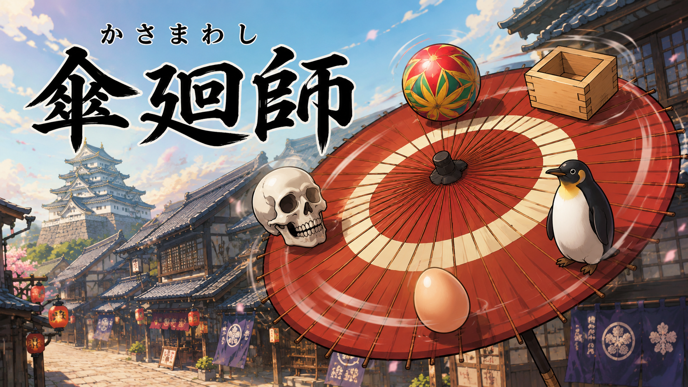
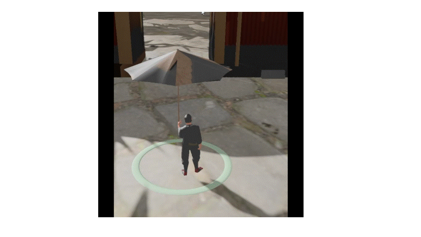
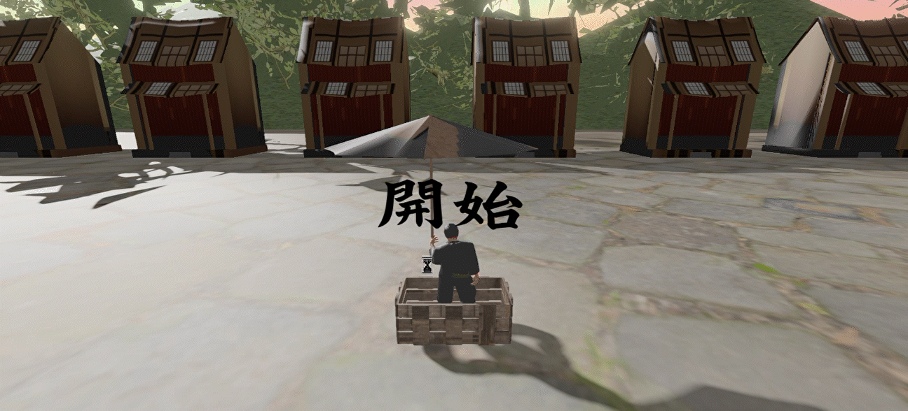

河原電子ビジネス専門学校 ゲームクリエイター科 2年（28卒）
GitHubのURL
https://github.com/MinoYasuhiro/KurukuruDaidougei
YoutubeのURL
https://youtu.be/vFspM1WKWlU?si=FeEYZufL00zf0ORD
タイトル
傘廻師
制作人数：
3人
製作期間：
2026年2月~2026年5月
ゲームジャンル：
3Dアクションゲーム
プレイ人数：
1人
使用言語：
C++
HLSL
使用ツール
開発環境
K2Engine（学校内製のエンジン）
担当しているもの：
青木
・ゲームシーン、カメラ、ステージ
三野
・Playerの挙動
岡﨑
・UI,BGMとSE,サウンド
傘回しで、観客を盛り上げて、投げ銭を集めるゲームです。
時間内に指定の回数回せたら傘回しを成功することが目的です。

アイテムの種類は鞠、卵の二種類です

プレイヤーについて
サウンド設定画面
カーソルに合わせてアイコンを拡大し、 選択時に傘が開く演出を追加しました。
-1.gif)
観客を盛り上げながら投げ銭を集める達成感と、
直感的な操作が魅力です。
スティック操作で傘が直接回転し、
操作とゲームの動きが一致します。
回転とバランスの同時操作により、
シンプルながら奥深いゲーム性を実現しています。

void SoundSettings::Save()
{
std::ofstream ofs("SoundSettings.dat", std::ios::binary);
ofs.write((char*)&Master, sizeof(float));
ofs.write((char*)&BGM, sizeof(float));
ofs.write((char*)&SE, sizeof(float));
}
void SoundSettings::Load()
{
std::ifstream ifs("SoundSettings.dat", std::ios::binary);
if (!ifs)return;
ifs.read((char*)&Master, sizeof(float));
ifs.read((char*)&BGM, sizeof(float));
ifs.read((char*)&SE, sizeof(float));
}
ゲームを閉じても音量設定が保持されるようにしました。
EaseInOutCubicを使用し、自然なカメラ移動を実現しました

float GameCamera::EaseInOutCubic(float t)
{
return (t < 0.5f)
? 4.0f * t * t * t
: 1.0f - powf(-2.0f * t + 2.0f, 3.0f) * 0.5f;
}
float dot = current.x * prev.x + current.y * prev.y;
dot = Clamp(dot, -1.0f, 1.0f);
float angle = acosf(dot);
float cross = prev.x * current.y - prev.y * current.x;
if (cross < 0)
{
angle = -angle;
}
内積で角度、外積で方向を求め、 直感的な回転操作を実現しました。